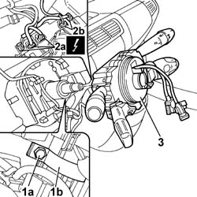

5550A10 STALK UNIT ASSEMBLY - R+R
- Path
- Procedures > 55 ELECTRICAL EQUIPMENT > 5550 WARNING AND MANOEUVRING INDICATORS > 5550A STALK UNIT > 5550A10 STALK UNIT ASSEMBLY - R+R
- Kind
- repair procedure (removal / refitting; the operation number is the code)
- Applies to
- all engines; all production periods
- Interactive page
- https://sloeber94.github.io/elrnDB-fUlss/en/#/179007596
Applies to: all engines; all production periods
 Removing
Removing
 Refitting
RefittingOp. 5530B56 BATTERY DRIP TRAY COVER - R.R.
- Disconnect the negative battery terminal.
Op. 7040A26 STEERING COLUMN TRIM - R+R
Op. 5580C18 AIR BAG MODULE - R+R
Op. 4110A10 STEERING WHEEL - R+R FOR REPLACEMENT OR CHECKS
1. Loosen the collar (1b) bolt (1a).
- Act on the plastic tabs and release the steering column switch unit from the steering column.
2. Disconnect the electrical connections (2a) and (2b).
3. Remove the steering column switch unit complete with clock spring.

Applies to: all engines; all production periods
Refitting
Removing- Check that the steering column switch unit is not damaged and, if necessary, conduct an electrical test.
- Connect the electrical connections.
- Position the steering columnn switch unit and tighten the collar bolt.
- If the steering column switch unit is being reused, release the plates from any fastenings positioned previously.
- If the steering column switch unit is being replaced with a new one, remove the clock spring safety tab.
Op. 4110A10 STEERING WHEEL - R+R FOR REPLACEMENT OR CHECKS
Op. 5580C18 AIR BAG MODULE - R+R
Op. 7040A26 STEERING COLUMN TRIM - R+R
- Connect the negative battery terminal.
Op. 5530B56 BATTERY DRIP TRAY COVER - R.R.
- Check the operation of the systems involved using the Examiner or other diagnostic equipment.
Topics linked from this page (4)
- 4110A10 STEERING WHEEL - R+R FOR REPLACEMENT OR CHECKS
- 5530B56 BATTERY DRIP TRAY COVER - R.R.
- 5580C18 AIR BAG MODULE - R+R
- 7040A26 STEERING COLUMN TRIM - R+R
Topics that link to this page (16)
- 3350E20 STEERING ANGLE SENSOR R R
- 4110A30 SUPPORT WITH STEERING CONTROL SHAFTS - R+R - INCLUDES R+R STEERING WHEEL
- 5010B24 UNDER-FACIA AIR DUCTS R R
- 5010B39 FRONT CONNECTION FOR CENTRAL AIR DUCT TO REAR SEATS - R R
- 5010B45 DUCT FROM CLIMATE CONTROL SYSTEM - R R
- 5040C13 AIR CONDITIONER HEATER/DISTRIBUTOR ASSEMBLY - R R
- 5040C22 AIR CONDITIONING FAN ASSEMBLY - R.R.
- 5040C50 AIR CONDITIONING HEATER RADIATOR - R.R.
- 5040C64 A/C MANUAL CONTROL SWITCH (ONE) - R+R
- 5040D75 AIR CONDITIONING RECIRCULATION FLAP CONTROL MOTOR - R.R.
- 5040D90 AIR CONDITIONER SYSTEM WIRING BUNDLE - R R
- 5520A10 IGNITION SWITCH ASSEMBLY - R+R
- 5580C12 CLOCK SPRING FOR AIR BAG MODULE ON STEERING WHEEL R R
- 7040A10 DASHBOARD TRIM - R+R
- 7040A97 FACIA TRIM SUPPORT BEAM - R R
- 7040L17 PASSENGER COMPARTMENT FLOOR FRONT CARPET - R R